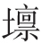

将军魏武之子孙 [1] ，于今为庶为清门 [2] 。英雄割据虽已矣 [3] ，文彩风流今尚存 [4] 。学书初学卫夫人 [5] ，但恨无过王右军 [6] 。丹青不知老将至，富贵于我如浮云 [7] 。开元之中常引见 [8] ，承恩数上南薰殿 [9] 。凌烟功臣少颜色 [10] ，将军下笔开生面 [11] 。良相头上进贤冠 [12] ，猛将腰间大羽箭 [13] 。褒公鄂公毛发动 [14] ，英姿飒爽来酣战 [15] 。先帝天马玉花骢 [16] ，画工如山貌不同 [17] 。是日牵来赤墀下 [18] ，迥立阊阖生长风 [19] 。诏谓将军拂绢素 [20] ，意匠惨淡经营中 [21] 。斯须九重真龙出 [22] ，一洗万古凡马空 [23] 。玉花却在御榻上 [24] ，榻上庭前屹相向 [25] 。至尊含笑催赐金 [26] ，圉人太仆皆惆怅 [27] 。弟子韩幹早入室 [28] ，亦能画马穷殊相 [29] 。幹惟画肉不画骨 [30] ，忍使骅骝气凋丧 [31] 。将军画善盖有神，必逢佳士亦写真 [32] 。即今飘泊干戈际 [33] ，屡貌寻常行路人 [34] 。途穷反遭俗眼白 [35] ，世上未有如公贫。但看古来盛名下，终日坎

缠其身 [36] 。【题解】
丹青，是作画时所用红、绿等颜料，故称绘画为丹青。题注：“赠曹将军霸。”有的版本作大字并入诗题。张彦远《历代名画记》卷九：“曹霸，魏曹髦之后，髦画称于后代。霸在开元中已得名，天宝末，每诏写御马及功臣，官至左武卫将军。”唐玄宗末年得罪，削籍为庶人。安史乱后，流落蜀中。此诗为代宗广德二年（764）在成都作。
【评析】
清人浦起龙曰：“读此诗，莫忘却‘赠曹将军霸’五字。”“通篇感慨淋漓，都从此五字出。自来注家只解作题画，不知诗意却是感遇也。但其盛其衰，总从画上见，故曰《丹青引》”（《读杜心解》卷二之二）。所言极是。这首诗可说是曹霸小传：开头八句从曹霸的家世渊源说到学书作画，而发端十四字，就将曹霸的官职和家世门第一笔写尽，起势有万钧之力；其下八句，追叙曹霸昔日奉诏重画凌烟功臣盛事；再下十六句，追叙曹霸奉诏画玉花骢事，极赞其画马之妙；最后八句，从过去跌回现在，极写今日之衰，并与开头“为庶为清门”相照应。“屡貌寻常行路人”，又与前奉诏画人画马形成鲜明对比，“见今昔异时，喧寂顿判，此则赠曹感遇本旨也”（同上）。全诗章法错综，层次井然，宾主分明，对比强烈。诗咏绘画，而以学书陪衬，咏画又以画马为主，画人作陪；画马又以真马、凡马作陪，赞曹霸，又以画工、韩幹、圉人太仆陪衬；诗以绝大篇幅极力渲染昔日之盛，全为突出今日之衰作铺垫，而全诗借曹霸以自状，抒发自身漂零之感慨，极尽婉转跌宕之致。用韵亦匠心独运，全诗共四十句，每八句一换韵，意随韵转，平仄互换，可谓七古创格。所以乔亿赞曰：“此七古之长江大河也，于浑浩流转中，位置详审，无一笔造次，所谓‘惨淡经营’者，画不可见，诗独当之矣。”（《杜诗义法》卷下）
【注释】
[1] 魏武：指魏武帝曹操。曹髦为曹操曾孙，霸为髦后，故云。
[2] 庶：庶人。清门：寒门。
[3] 英雄割据：指东汉末年曹操割据中原。已：过去。
[4] 文彩风流：曹操能诗，故云。曹霸学书善画，故曰“今尚存”。
[5] 书：书法。卫夫人：东晋著名女书法家。张怀瓘《书断》：“卫夫人，名铄，字茂猗，廷尉展之女弟，恒之从女，汝阴太守李矩之妻也。隶书尤善，规矩钟繇。”（《法书要录》卷八引）王羲之曾向她学书法。
[6] 无过：没有超过。王右军：即东晋大书法家王羲之，曾官右军将军，故人称“王右军”。《晋书》本传称王羲之：“尤善隶书，为古今之冠。”
[7] “丹青”二句：化用《论语•述而》：“发愤忘食，乐以忘忧，不知老之将至云尔。”“不义而富且贵，于我如浮云”。
[8] 引见：应诏被引领晋见皇帝。
[9] 数（shuò）：屡次。南薰殿：在长安南兴庆宫内。
[10] 凌烟：指凌烟阁，在长安西内三清殿侧。凌烟功臣：唐太宗贞观十七年（643）二月，命阎立本画开国功臣二十四人像于凌烟阁，太宗亲作赞文。少颜色：指先前画像已经褪色。
[11] 开生面：指曹霸画新像，面目如生。《封氏闻见记》卷五：“玄宗时，以（凌烟）图画岁久，恐渐微昧，使曹霸重摹饰之。”
[12] 进贤冠：文臣所戴朝冠。《后汉书•舆服志下》：“进贤冠，古缁布冠也，文儒者之服也。”
[13] 大羽箭：一种四羽大竿长箭，唐太宗尝自制以旌武功。
[14] 褒公：褒国公段志玄。鄂公：鄂国公尉迟敬德。
[15] 飒爽：威武英俊貌。
[16] 先帝：指玄宗。天马：一作“御马”。玉花骢：玄宗所乘骏马名。
[17] 画工如山：极言画工之多。貌不同：画的与真马不相同，即画得不像。
[18] 赤墀（chí）：即丹墀，殿中台阶用丹泥涂之，故云。
[19] 迥立：昂首挺立。阊（chānɡ）阖（ hé）：宫门。生长风：形容马飞动神骏之英姿。
[20] 绢素：绘画用的白绢。
[21] 意匠：巧妙构思。惨淡经营：苦心规画设计。南齐谢赫《古画品录》，以经营位置为绘画六法之一。
[22] 斯须：一会儿，霎时间。九重：指皇宫。《楚辞•九辩》：“君之门兮九重。”真龙出：指马画得逼真，活灵活现。马八尺曰龙，此指玉花骢。
[23] 一洗：犹一扫。谓曹霸画马胜过所有人间凡马，为空前绝作。
[24] 御榻：御床。却在：不该在而在。此句谓乍一看以为玉花骢怎么跑到御榻上去了，细看方知是画马。
[25] 榻上：指曹霸画马。庭前：指赤墀下真马。画马似真，真假难分，故云“屹相向”。屹：屹立。
[26] 至尊：皇帝，指玄宗。
[27] 圉（yǔ）人：养马的人。太仆：掌马的官。惆怅：赞赏出神、惊叹莫名之状。杜甫《杨监又出画鹰十二扇》诗：“粉墨形似间，识者一惆怅。”与此义同。
[28] 韩幹，《历代名画记》卷九：“韩幹，大梁人……官至太府寺丞。善写貌人物，尤工鞍马。初师曹霸，后自独擅。”入室：喻学问技艺的成就达到精深阶段。旧称亲授嫡传弟子为“入室弟子”，语出《论语•先进》：“子曰：‘由也升堂矣，未入于室也。’”
[29] 穷殊相：穷形极相，曲尽变态。
[30] 画肉：指韩幹画马肥大。骨：指马的神骏风韵。宋张耒《萧朝散惠石本韩幹马图马亡后足》诗：“韩生丹青写天厩，磊落万龙无一瘦。”可见杜诗写实。
[31] 骅骝：传说为周穆王八骏之一。气凋丧：精神衰颓，没有神气。杜甫崇尚瘦劲，《房兵曹胡马》云：“胡马大宛名，锋棱瘦骨成。”
[32] 佳士：卓越非凡之人。写真：画像。
[33] 干戈：指战乱。飘泊干戈：指避安史之乱。
[34] 屡貌：常常描绘。此句谓曹霸为了糊口，不得不为寻常人画像，可见境遇落魄。
[35] 途穷：犹言走投无路。眼白：即白眼。《晋书•阮籍传》：“籍又能为青白眼，见礼俗之士，以白眼对之。”曹霸为名画家，却被流俗之辈轻视，故曰“反遭”。
[36] 坎 （lǎn）：穷困潦倒。《楚辞•九辩》：“坎 兮贫士失职而志不平。”